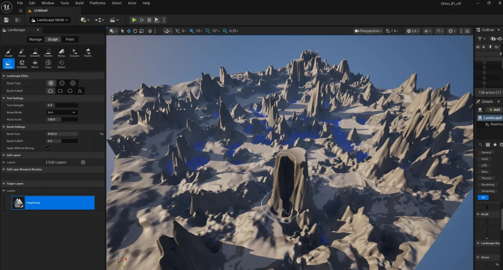

Epic Jam 2026
Devlog: Day 1, 12 November 2026
-
Dawn of the jam day
Little to nothing configured.
-
First look at the rules
We thought we couldn't create assets ourselves, so they would come from Fab.
-
We think the theme is the Andes
That 2026 Epic Jam was from July, though.
-
The perfect map, on Fab
Disaster: it's not compatible with the latest UE5.
-
LiDAR and Blender
An idea that would strip us of our tokens.
-
A break
Claude Organisation set up: 3x Pro seats. Andy is bringing two gaming computers.
-
The rule book, read properly
Asset creation is actually OK.
-
Registered for the jam
The real theme: DIRECTOR'S CUT.
-
A submodule for Orion-81
Unrealised features from the Orion POC may be considered legit.
-
A space combat capture the flag game
We will make it using UE5.
-
We make our own assets
We will probably still use the map I quickly made in UE5.
-
GLB as the 3D file format
It seemed the most versatile choice.
The first decisions come from today, made by Zilvinas and me. At the dawn of the jam day we had very little, little to nothing configured, and we had to familiarise ourselves with the rules. First we thought we couldn't create assets ourselves, as that's what was declared on the jam's itch.io page. Ideating about how a good space flight CTF should work, we quickly realised that the gameplay would be defined by 1) the theme and 2) the assets that are available from Fab. We came across epicgamejam.com's themes and thought that the theme was the Andes, without realising that this 2026 Epic Jam was from July... We found the perfect map on Fab to use for it, but then - disaster! It's not compatible with the latest version of UE5 that we need to work with Claude Code... I thought maybe I could process some LiDAR data, recreate a part of Machu Picchu and the Andes in Blender and realise it in UE5 later - but that would strip us of our tokens...
Took a break and ironed out the Claude Organisation particulars: 3x Pro seats. Andy called and mentioned he was going to bring over two gaming computers he'd built, so we could parallelise development when it came to it. Read the rule book properly. Realised that asset creation is actually OK and whatever is written on itch.io was a bit of an overstatement. Registered for the jam and got the real theme sent over - turns out it's DIRECTOR'S CUT... Checking your assumptions is important, don't forget 😃!
So we started ideating about making a submodule that may be used for Orion-81. At this point anything that was an unrealised feature from the Orion POC may be considered legit under the Director's Cut theme. Nice not to be tied to the Andes, although we will probably still use the map I quickly made for it in UE5.

We will make a space combat capture the flag game using UE5. At first we thought that the assets must be sourced from Fab, but after reading the actual rules document we found out that we can make them. So we will make them.
We only had the Claude-GitHub MCP pre-configured. I had Visual Studio too, which was used in conjunction with Claude Code to generate the C++ files. We also had GitHub Pages pre-configured for this website, and the website, needless to say, has been going for some time now.
We use AI to understand pipelines, whatever they might be. We've decided to go for the GLB 3D file format, as that seemed to be the most versatile choice.
| Consideration | GLBour choice | FBX | OBJ |
|---|---|---|---|
| Static props | Yes. Holds meshes, PBR materials and textures. | Yes. Static meshes import through UE5's oldest and most used import path. | Yes. Static geometry; UE5 and Godot import it as a static mesh. |
| Rigged and animated | Yes. Holds skeletons and animation. | Yes. Skeletal meshes and animation. | No. No skeleton, no animation, no hierarchy and no standard PBR materials. |
| Open format and licence | glTF 2.0, an open royalty-free standard (Khronos). | Proprietary (Autodesk); Autodesk's SDK is the official reader and writer. | An open plain-text format. |
| One self-contained file | Yes. Meshes, PBR materials, textures, skeletons and animation in one binary file. | Can embed textures but usually ships with them beside it. | No. Materials are in a separate MTL file, with the textures beside it. |
| Maturity of the import in UE5 | UE5 imports glTF/GLB, a younger import path than FBX. | UE5's oldest and most used import path. | UE5 imports it as a static mesh. |
| Portable to Godot | Yes. Godot's preferred 3D format. | Godot can import it. | Godot imports it as a static mesh. |
| Size of one small ship | 227.2 KB (227,172 bytes), measured. | About 209 KB to 1,174 KB, estimate (compressed to uncompressed arrays) | 882.3 KB (882,315 bytes), measured. |
Test mesh: 10,000 triangles, 5,191 vertices, with positions, normals and one UV set, and no textures. GLB and OBJ were written and measured by our own script. FBX is an estimate, reckoned from how the format stores the same arrays, plus a guessed fixed overhead; compressed arrays would give about 209 KB.